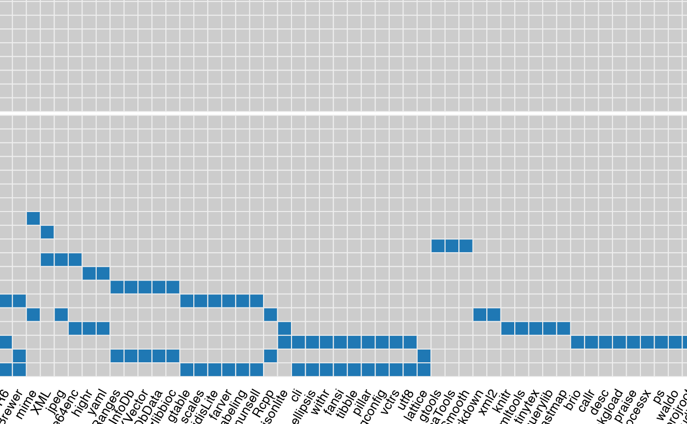

pkgndep.RdPackage dependency analysis
pkgndep(package, verbose = TRUE, online = TRUE, load = FALSE, parse_namespace = TRUE)Package name. The value can be 1. a CRAN/Bioconductor package, 2. an installed package, 3. a path of a local package, 4. URL of a GitHub repository.
Whether to show messages.
If the value is TRUE, it will directly use the newest package database file from CRAN/Bioconductor. Note the default Bioconductor version is the one corresponding to the current R version. If you want to use a higher bioc version, you need to set the global option pkgndep_opt$bioc_version. If the value of online is FALSE, a snapshot of the CRAN/Bioconductor package database will be used. The version of the package database snapshot can be via the global option pkgndep_opt$heaviness_db_version.
If the value is TRUE, the package is loaded into a fresh new R session and the function will check which upstream packages are also loaded into the R session. Note it is possible that an "Imports" package is not loaded or a "Suggests" package is loaded in the R session when loading package.
Whether to also parse the NAMESPACE file. It is only used internally.
A pkgndep object.
# \dontrun{
x = pkgndep("ComplexHeatmap")
#> retrieve package database from CRAN/Bioconductor (3.16)...
#> - 21717 remote packages on CRAN/Bioconductor.
#> - 761 packages installed locally.
#> prepare dependency table...
#> prepare reverse dependency table...
# }
# The `x` variable generated by `pkgndep()` is already saved in this package.
x = readRDS(system.file("extdata", "ComplexHeatmap_dep.rds", package = "pkgndep"))
x
#> 'ComplexHeatmap', version 2.11.1
#> - 30 packages are required for installing 'ComplexHeatmap'.
#> - 118 packages are required if installing packages listed in all fields in DESCRIPTION.
dependency_heatmap(x)
#> The best device size to visualize the complete plot is 18.41 x 8.37 (in inches),
#> or use `plot(obj, fix_size = FALSE)` so that heatmap cells are not in fixed sizes.
